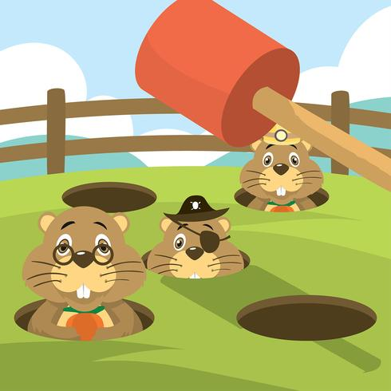
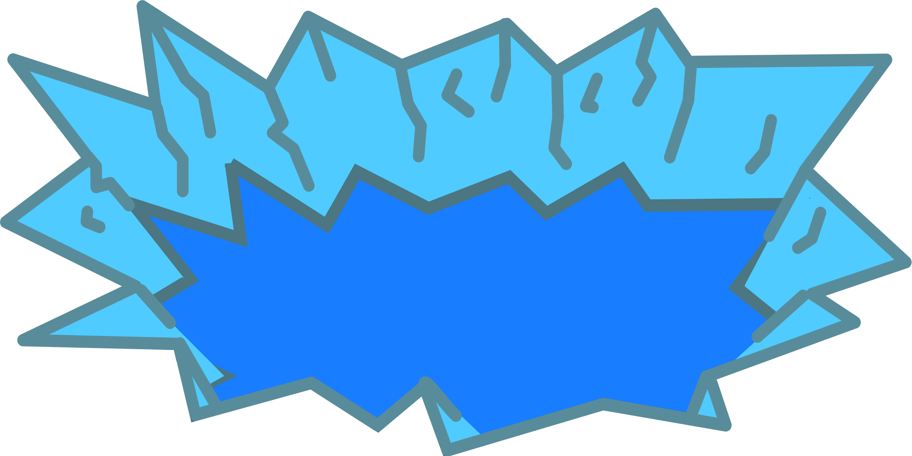

When I designed this game, I decided to go with polar bears as the enemy. The goal is to use the cursor (or hammer) to click on as many bears as possible when they pop up. Doing so increases the points. However, missing any clicks will increase the number of misses.
Whack-a-Mole is a popular arcade game where players use a hammer to hit moles when they appear. The following image is an example of how a typical whack-a-mole game appears.
The holes where the bears appear are fishing holes.
For this game, I decided to go with a different theme. Instead of a mole, I used polar bears. For the background of the game, I used several blue backgrounds:
Overall, my objective was to create a game similar to whack-a-mole, but designed in a way that suited my style.